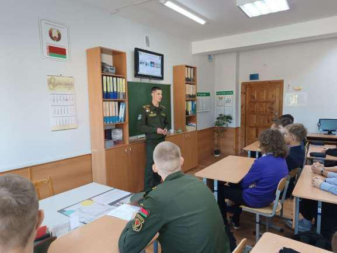
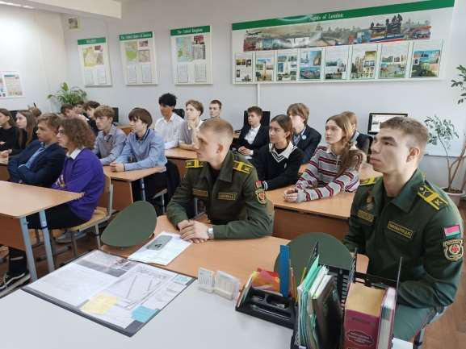
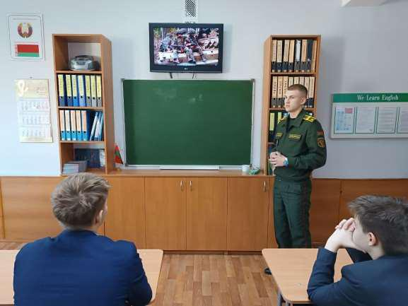
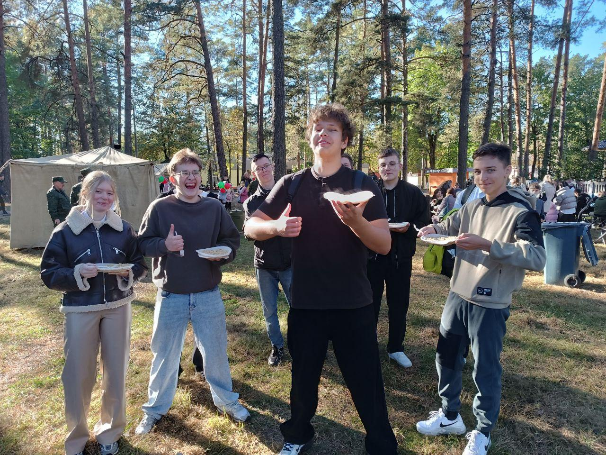
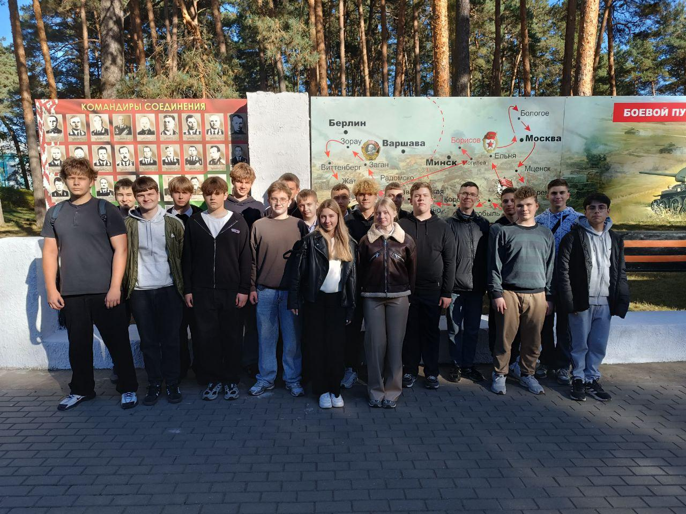
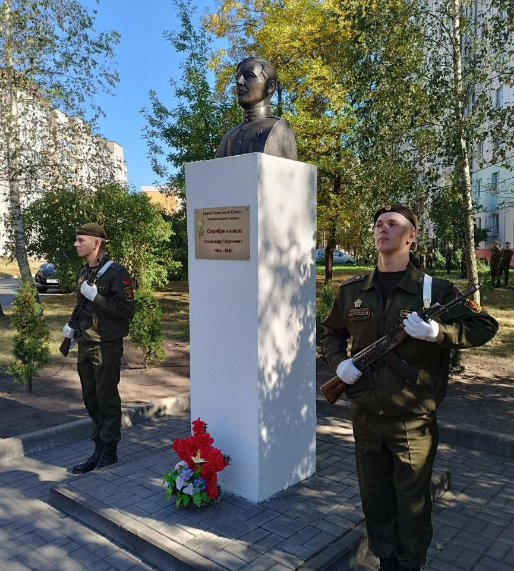
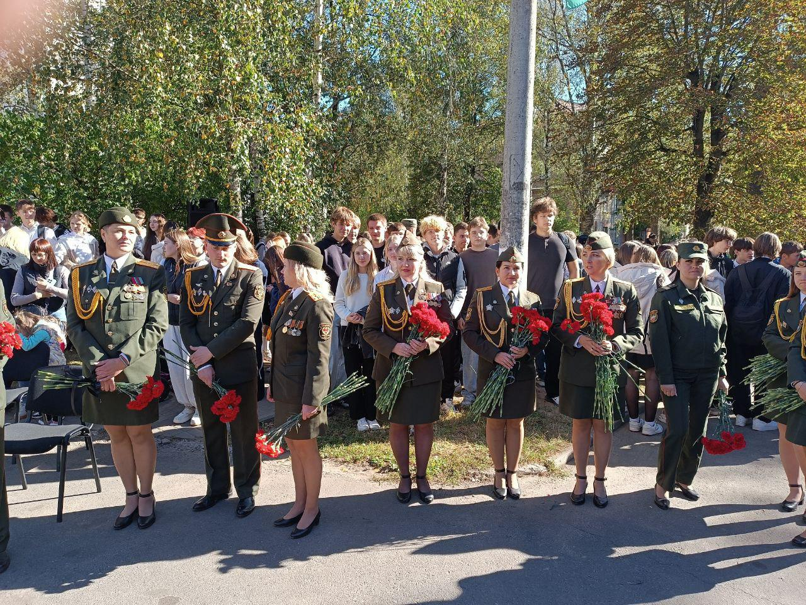
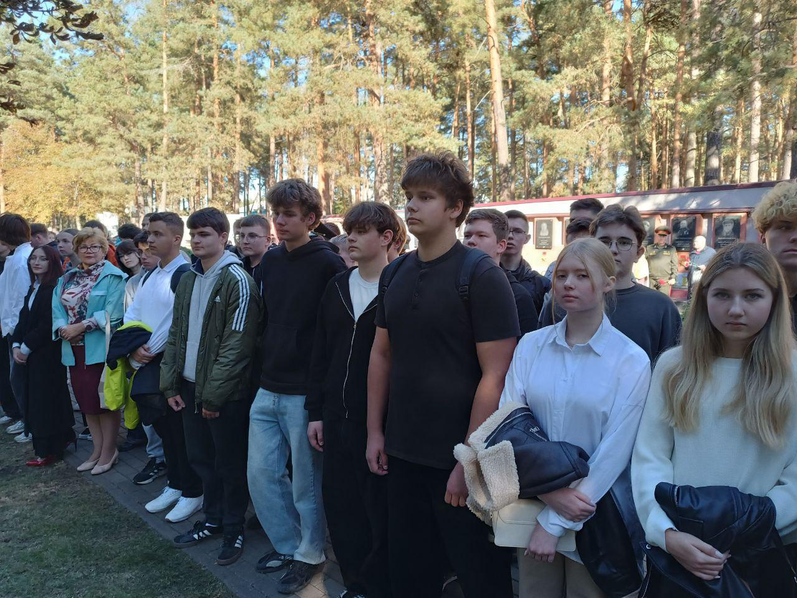

ВСТРЕЧА С КУРСАНТАМИ
26 сентября учащиеся 11 «А» класса встретились с курсантами факультета ракетных войск и артиллерии УО «Военная академия Республики Беларусь» и военного факультета Белорусской государственной академии авиации.

На встречу с ребятами прибыли бывшие выпускники Борисовских учреждений образования, а ныне курсанты высших учебных заведений системы национальной безопасности Республики Беларусь младшие сержанты Егор Щемелев и Дмитрий Пивоваров, курсант Владислав Ткач.

Гости в погонах рассказали гимназистам о своих специальностях, особенностях учебы, проходных баллах при поступлении, быте и досуге курсантов. Не остались без внимания и вопросы питания, увольнений и отпусков, денежного довольствия и перспектив службы. Также было отмечено, что на отдельные артиллерийские специальности и специальности, связанные с эксплуатацией беспилотных летательных аппаратов, могут набираться и девушки.

72 ГВАРДЕЙСКОМУ ОБЪЕДИНЕННОМУ УЧЕБНОМУ ЦЕНТРУ – 85 ЛЕТ!
26 сентября учащиеся 10 «А» класса и члены клуба «Юнармеец» приняли участие в торжественных мероприятиях, посвященных 85-й годовщине 72 гвардейского Объединенного учебного центра подготовки прапорщиков и младших специалистов.
6-я гвардейская дивизия, правопреемником которой является 72 ОУЦ, была сформирована 26 сентября 1941 года. За время Великой Отечественной войны дивизия прошла боевой путь от Орла до Праги. Воины дивизии участвовали в крупнейших битвах и операциях, таких как битва за Москву, Курская битва, Киевская оборонительная операция, Львовско-Сандомирская, Висло-Одерская, Берлинская и Пражская наступательные операции. За время боевых действий 69 военнослужащих были представлены к высшей награде того времени – Герой Советского Союза!

В ходе торжественных мероприятий гимназисты приняли участие в возложении цветов и гирлянды к памятнику первому Герою Советского Союза соединения гвардии старшему сержанту Александру Серебренникову, торжественном шествии и митинге у Вечного огня на Аллее Героев.


В заключение торжеств военнослужащие центра предоставили возможность ознакомиться с военной техникой и накормили учащихся солдатской кашей с чаем.

